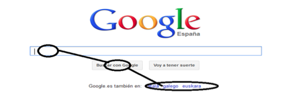

Hicks Law
Amazon.com

Hick's law, or the Hick-Hyman law, named for the British and American psychologists William Edmund Hick and Ray Hyman, describes the time it takes for a person to make a decision regarding the number of possible choices they have: increase the number of options will increase the decision time logarithmically. The Hick-Hyman law assesses cognitive information capacity in choice reaction experiments. The amount of time required to process a certain number of bits in the Hick-Hyman law is known as the information gain rate. the user will spend more time choosing a product there are many options to choose from.
Visual Hierarchy
ChurchofJesusChrist.org

the page of the church of Jesus christ of the Saints of the last days is a good example of Visual Hierarchy because the images predominate on the web page the images are large is more visual less text, the images predominate on the page."
Fitts Law

Fitts' law is a law that, when it comes to interface design, tries to calculate the time needed to move from our current position to a final goal. This is based on the distance to the objective and the size of the area of our final objective mentioned before. A good example of this is the most famous search engine of the computer giant, Google, it is a good use and application of this law, since all the buttons that are related to each other are well grouped, with a correct area and within a short distance, of so that the search is fast.